Newest Design Sketches (Wireframes and colour block outs):

Notes:
- The illustration is to sprinkle some of my personality into this website.
- The homepage button in the navigation bar is mint green to make it stand out against everything else, as it is the most importants elemnt. All the main information will be found here, and the user will be able to travers from the homepage everywhere else.
- I want the website to open with a bit of information about myself, so the user knows what they are getting themselves into.
 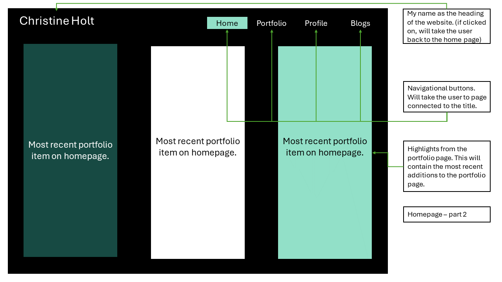
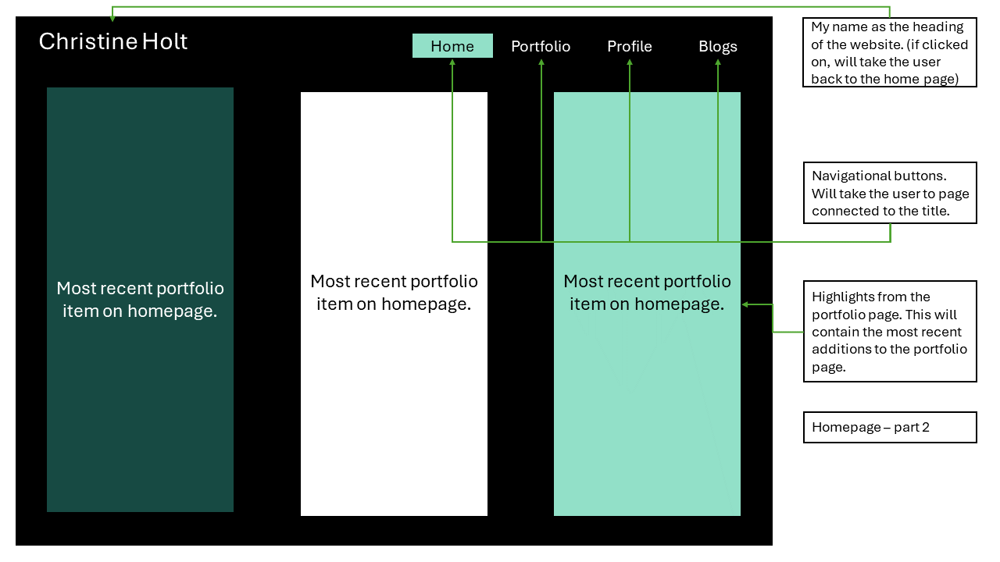
Notes:
- This is the part of the homepage that displays the most recent additions to the portfolio page.
- I would like this to show an active engage ment with the website from my side, as I will be adding the portfolio items as I go (I have not yet, but I mean more when I make a website one day that I will be sending to employers)
- I want these to display a screenshot and some main points about the items.
 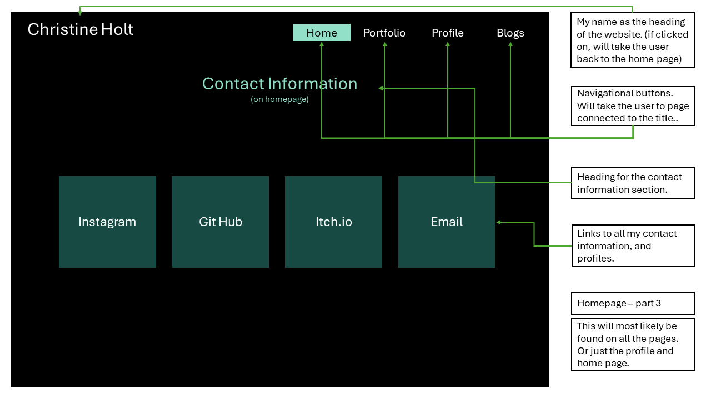
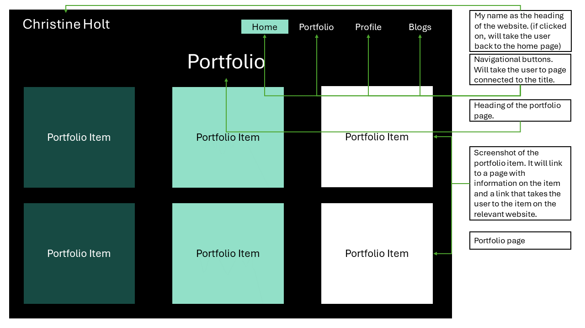
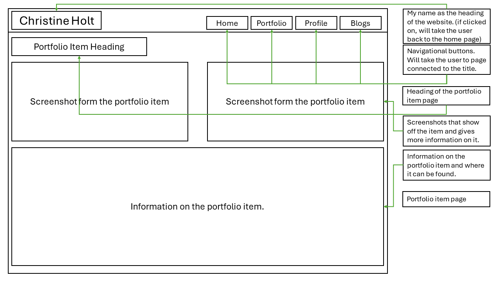
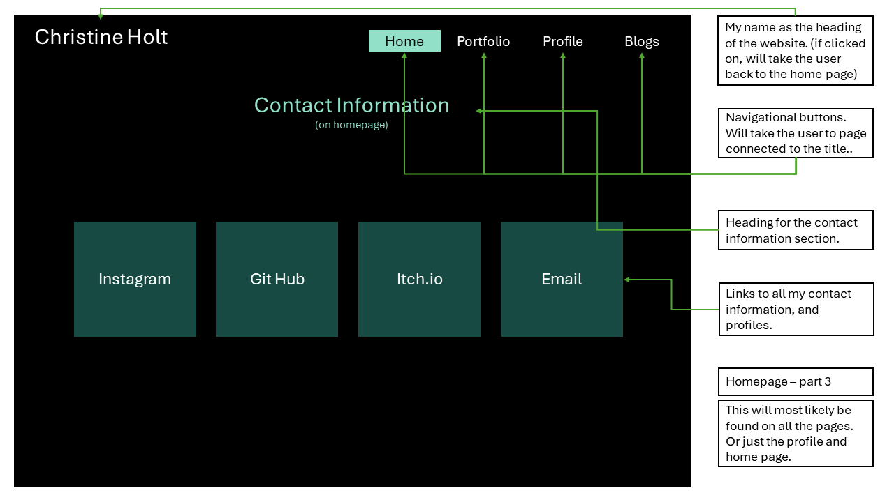
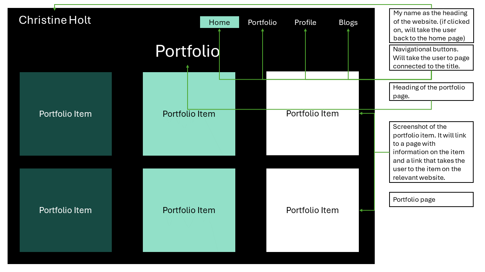
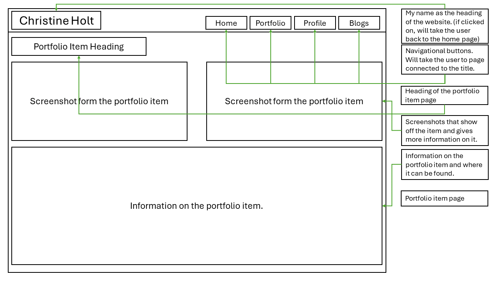

 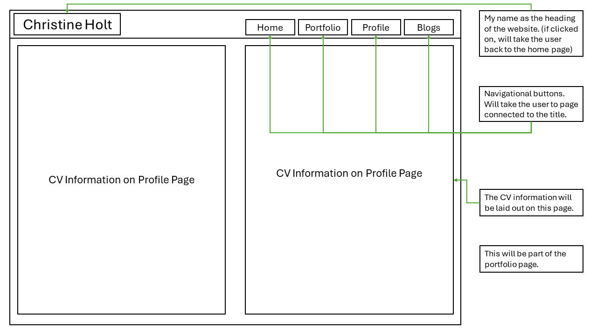
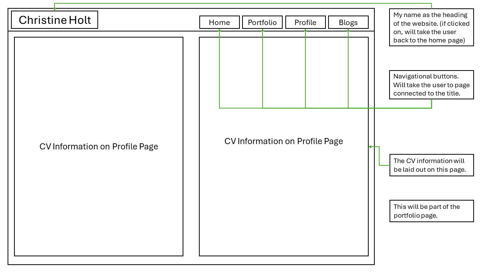

 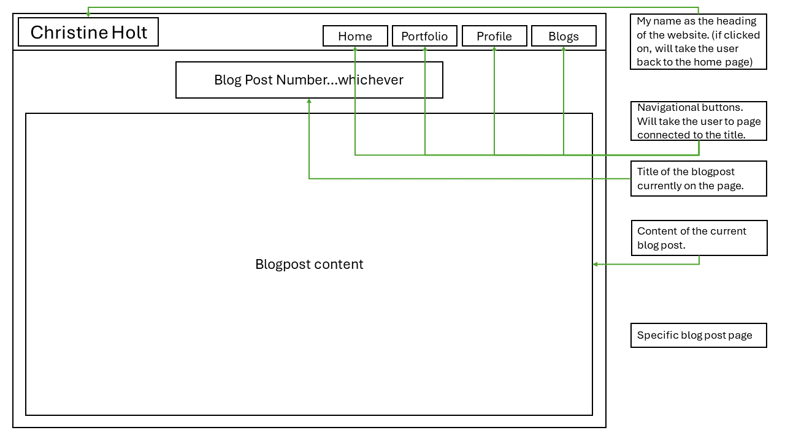
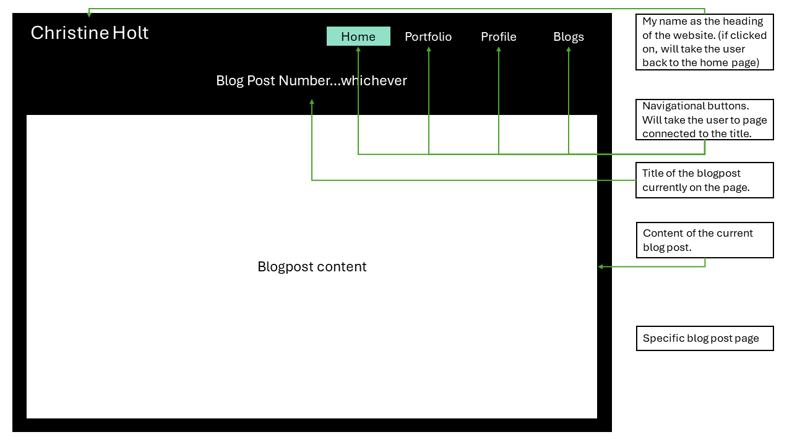
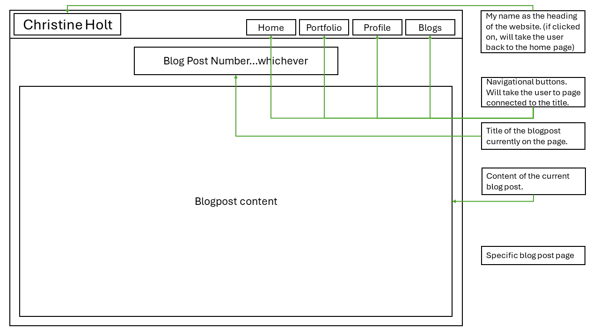
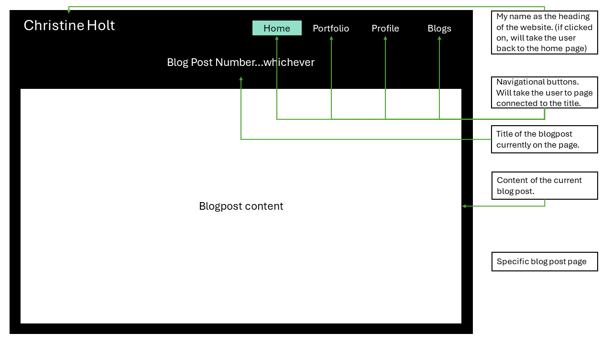